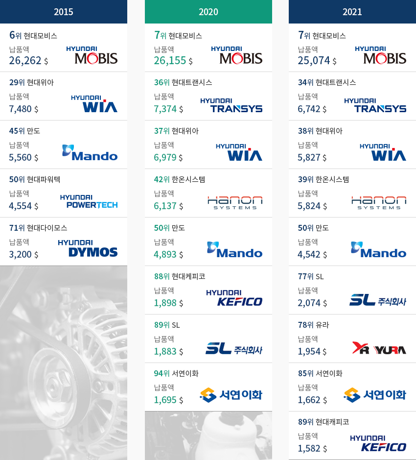
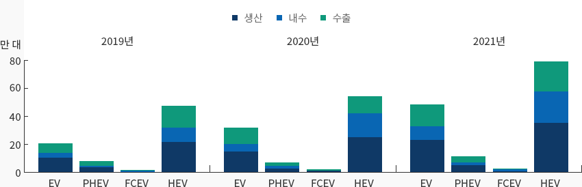
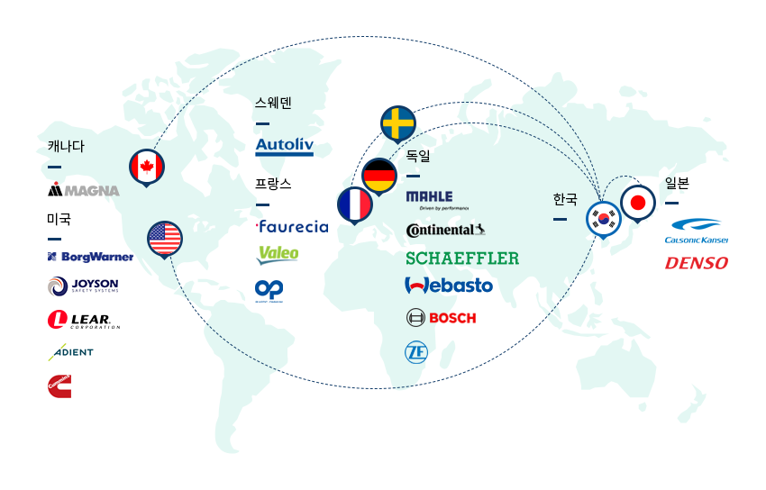
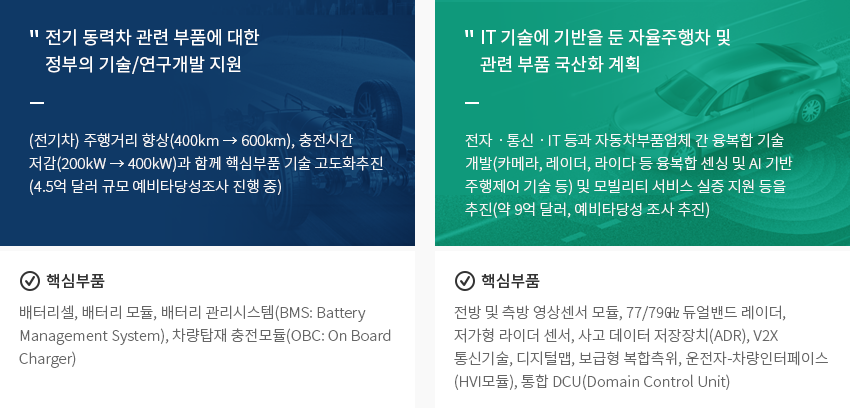
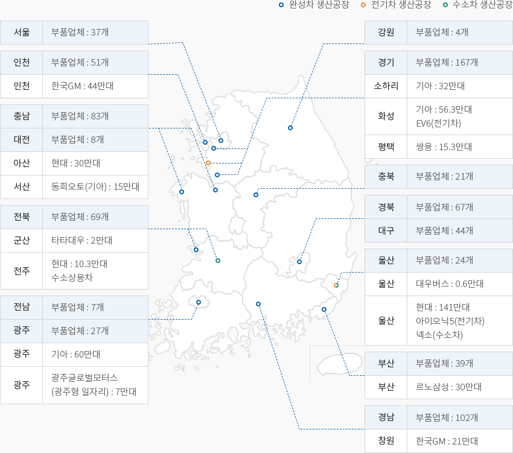

자동차부품
- Home
- Why KOREA
- 산업
- 자동차부품
자동차부품
Automotive Parts
-
연간 400만대, 세계 5위의 자동차 생산기반을 바탕으로 경쟁력 있는 부품산업 기반 보유 내용닫기연간 400만대, 세계 5위의 자동차 생산기반을 바탕으로 경쟁력 있는 부품산업 기반 보유대한민국은 연간 400만대 이상 자동차 생산이 가능한 세계 5위의 자동차 생산 대국이다.
국내에서 생산되는 절반은 국내 내수시장에 판매되며, 나머지 절반은 전세계로 수출되는 수출주도적 환경이다.
2021년 자동차 반도체 부족사태로 총 346만대를 생산 하였으며, 이중 60%에 해당하는 205만대를 수출하였다.
한국은 안정된 사회 구조와 인프라로 코로나19 위기를 빠르게 회복 중이며, 년간 180만대,
세계 10위의 튼튼한 내수시장이 뒷받침하고 있다.생산량에 걸맞게 한국 부품사들은 세계적인 기업으로 성장하고 있으며, 유명 해외기업들
대부분은 국내에 거점 공장을 운영하고 있다. 2021년 세계 100대 자동차부품업체 순위(매출액 기준)에 따르면,
한국 부품업체는 9개사가 선정되었다. 이들 9개사의 매출액은 552억 달러로 100대 부품업체 매출의 7.4%를 차지한다.
2020년 8개사 대비 1개업체가 늘었다. 특히, 유라는 전장모듈, 배선시스템 등을 공급하는 업체로 전기차 전환시점에
높은 상승을 하여 ‘21년 78위로 새롭게 진입 하였다."세계 100대 자동차부품 업체 중 한국업체 순위"(단위 : 백만 달러)세계 100대 자동차부품 업체 중 한국업체 순위(매출액)표로 년도별(2010,2015,2019) 업체명, 납품액 정보제공 2015 2020 2021 업체명 납품액 업체명 납품액 업체명 납품액 현대모비스(6위) 26,262 현대모비스(7위) 26,262 현대모비스(7위) 25,074 현대위아(29위) 7,480 현대트랜시스(36위) 7,374 현대위아(34위) 6,742 만도(45위) 5,560 현대위아(37위) 6,979 만도(38위) 5,827 현대파워텍(50위) 4,554 한온시스템(42위) 6,137 현대다이모스(39위) 5,824 현대다이모스(71) 3,200 만도(50위) 4,893 만도(50위) 4,542 현대케피코(88위) 1,898 SL(77위) 2,074 SL(89위) 1,883 유라(78위) 1,954 서연이화(94위) 1,695 서연이화(85위) 1,662 현대캐피코(89위) 1,582  ※ 자료 : Automotive News
※ 자료 : Automotive News -
대한민국 경제를 이끄는 자동차 산업, 미래차로 발빠른 전환 중 내용열기대한민국 경제를 이끄는 자동차 산업, 미래차로 발빠른 전환 중한국 자동차산업은 반도체산업과 함께 한국 제조업을 대표하는 산업으로 생산액, 고용, 수출 등
주요지표에서 차지하고 있는 비중이 10%를 상회하고 있다."한국 자동차산업 위상"한국 자동차산업 위상 통계로 사업체 수, 고 용, 생산액, 부가가치, 수출, 무역수지 정보제공 사업체 수
(개사)고 용
(천명)생산액
(십억원)부가가치
(십억원)수출
(백만달러)무역수지
(백만달러)완성차산업 34 89,130 92,920 23,825 46,466 32,216 비중 0.00% 3.00% 6.00% 4.30% 7.20% 자동차부품산업 4,480 247,271 103,793 31,567 22,776 16,540 비중 6.40% 8.40% 6.70% 5.70% 3.50% ※ 자료 : 통계청, KITA※ 주석- 업체 수, 고용, 생산액, 부가가치는 2019년, 수출, 무역수지는 2020년 기준
- 비중은 제조업 내 비중 단, 수출은 전체 수출에서 차지하는 비중
완성차와 부품 산업을 합한 자동차 산업은 대한민국 총 고용의 11.4%, 총 생산의 12.7%, 총 수출의 10.5%를 차지한다.
특히 수출주도 산업으로 ‘21년 기준 487억 달러(약 57조원)의 무역수지를 기록하였다.(단위 : 천대)자동차 산업동향 통계로 구분, 년도 정보제공 구분 2011 2012 2013 2014 2015 2016 2017 2018 2019 2020 생산 4,657 4,562 4,521 4,524 4,556 4,229 4,115 4,029 3,951 3,507 내수 1,586 1,532 1,544 1,662 1,842 1,836 1,807 1,813 1,780 1,885 (단위 : 억 달러)자동차 산업동향 통계로 구분, 년도 정보제공 구분 2011 2012 2013 2014 2015 2016 2017 2018 2019 2020 수출 450 468 482 484 452 402 417 409 431 374.1 수입 42 51 62 90 107 105 109 121 120 130.7 ※ 출처 : 자동차산업협회 「자동차통계월보」 무엽협회 통계
※ 주석 : 생산 및 내수 : 완성차
※ 주석 : 수출입 금액 : MTI, MTI742 합산기준세계적인 추세에 맡게 대한민국 자동차 산업도 빠르게 전동화로 탈 바꿈하고 있다.하이브리드(HEV), 플러그인하이브리드(PHEV), 전기차(EV), 수소차(FCEV)로 대변되는 친환경차의
총 비율이 생산량 기준 2019년 9.4%에서 2020년 12.7%, 2021년 18.6%까지 높아지고 있다.국내 판매되는 대수 기준으로는 2019년 7.9%에서 2020년 11.9%, 그리고 2021년에는 20%를 돌파하였다.
순수 친환경차인 EV와 FCEV만 보았을 때도 내수시장에서 2019년 2%에서 2021년 6%를 넘어섰다.
앞으로 친환경차로의 전환은 더욱 빨라질 것이라는 예측이 지배적이다.특히 현대자동차그룹은 세계에서 유일하게 승용, 상용을 아우르는 수소차를 양산하는 기업이다.
그래서 많은 수소 기술이 있는 많은 해외기업들이 한국의 수소 산업에 큰 관심을 가지고 있다."한국 전기동력차 생산 및 판매 동향"
(단위 : 대)한국 전기동력차 생산 및 판매 동향 통계로 구분, 년도 정보제공 2019 2020 2021 생산 내수 수출 생산 내수 수출 생산 내수 수출 EV(전기차) 103,437 32,052 76,099 152,174 44,617 119,718 230,177 96,666 154,014 PHEV (플러그인 하이브리드차) 39,831 5,255 31,435 30,523 10,702 26,065 52,600 19,701 37,957 FCEV (수소연료 전지차) 6,020 4,194 788 6,594 5,789 1,041 9,639 8,502 1,121 HEV (하이브리드 전기차) 220,699 98,810 150,615 254,725 163,984 124,503 352,271 222,869 211,807 ※ 자료 : 자동차산업협회 -
글로벌 자동차부품 기업의 지속적인 투자 내용열기글로벌 자동차부품 기업의 지속적인 투자세계 100대 자동차부품업체 중 대부분이 한국에 진출하였으며, 주로 기술력이 높은 핵심부품을 위주로 공급한다.
특히 최근 2년 사이 전기차 모터/배터리, 수소차 퓨얼셀/탱크, 자율주행 센서 등 미래차 부품 생산을 위한
지속적인 투자가 이뤄지고 있다.대한민국 정부는 친환경 미래차 산업 육성을 위한 전폭적인 지원을 아끼지 않고 있으며,
한국은 미래차 생산거점으로 발돋움 중이다.
-
글로벌 미래차 시장 선도를 위한 정부 지원정책 강화 내용열기글로벌 미래차 시장 선도를 위한 정부 지원정책 강화한국 정부는 전기차, 수소차, 자율주행차 등 미래차 전환을 위해 다양한 전략을 내세우고 있다.
전기차 판매보조금 확대, 전기/수소 충전시설 구축 지원, 미래차 전환 부품사 지원 등 다양한 지원방안이 마련되고 있다.
또한 2021년 2월, 세계최초로 수소차법을 시행하여 수소차 산업 발전에 가장 앞장서고 있다.전기 동력차 관련 부품에 대한 정부의 기술/연구개발 지원(전기차) 주행거리 향상(400km → 600km), 충전시간 저감(200kW → 400kW)과 함께 핵심부품 기술 고도화 추진(4.5억 달러 규모 예비타당성조사 진행 중)핵심부품 : 배터리셀, 배터리 모듈, 배터리 관리시스템(BMS: Battery Management System), 차량탑재 충전모듈(OBC: On Board Charger)IT 기술에 기반을 둔 자율주행차 및 관련 부품 국산화 계획전자ㆍ통신ㆍIT 등과 자동차부품업체 간 융복합 기술 개발(카메라, 레이더, 라이다 등 융복합 센싱 및 AI 기반 주행제어 기술 등) 및 모빌리티 서비스 실증 지원 등을 추진(약 9억 달러, 예비타당성 조사 추진)핵심부품 : 전방 및 측방 영상센서 모듈, 77/79㎓ 듀얼밴드 레이더,저가형 라이더 센서, 사고 데이터 저장장치(ADR), V2X 통신기술, 디지털맵, 보급형 복합측위, 운전자-차량인터페이스(HVI모듈), 통합 DCU(Domain Control Unit)
-
지역별 특화전략을 통한 미래자동차 전환 내용열기지역별 특화전략을 통한 미래자동차 전환한국 자동차산업은 비교적 전국적으로 산재해 있으며, 수도권을 비롯한 서해안 지역 클러스터,
울산을 중심으로 한 동남권 클러스터, 광주·군산 등 호남권 클러스터로 구분된다.수도권에는 기아차, 한국GM의 완성차 공장이 있으며 현대기아차 남양연구소를 비롯한 연구소 및 공장,
자율주행차 전용 실험도시(K-City)가 있다. 충청권은 124개의 1차 협력업체가 천안, 아산, 당진 지역을 중심으로
집중분포 하였으며, 동남권은 현대자동차, 르노삼성차, 한국 GM등 국내 주요 완성차 업체와 337개 1차 부품업체가
클러스터를 이루고 있다." 국내 완성차 공장 및 1차 부품업체 분포도 "국내 완성차 공장 및 1차 부품업체 분포도- 서울:부품업체 37개
- 강원:부품업체 4개
- 인천:부품업체 51개
- 인천:한국GM 44만대
-
경기:부품업체 167개
- 소하리:기아 32만대
- 화성:기아 56.3만대, EV6(전기차)
- 평택:쌍용 15.3만대
- 충남:부품업체 83개
- 대전:부품업체 8개
- 아산:현대 30만대
- 서산:동희오토(기아) 15만대
- 충북:부품업체 21개
-
전북:부품업체 69개
- 군산:타타대우 2만대
- 전주:현대 10.3만대 수소상용차
- 경북:부품업체 67개
- 대구:부품업체 44개
- 전남:부품업체 7개
-
광주:부품업체 27개
- 광주:기아 60만대
- 광주:광주글로벌모터스 (광주형 일자리 : 7만대)
-
울산:부품업체 24개
- 울산:대우버스 0.5만대
- 울산:현대 141만대, 아이오닉5(전기차), 넥소(수소차)
-
부산:부품업체 39개
- 부산:르노삼성 30만대
-
경남:부품업체 102개
- 창원: 한국GM : 21만대
※ 자료 : KAMA, KAICA
※ 주: 2020년 완성차 생산능력, 1차부품업체 기준


Invest KOREA담당자
자동차부품 PM
이상훈
기간산업유치팀
T.+82-2-3460-7714
입지정보 추천
산업단지 정보
[충청남도 서산시] 명천자동차전문단지
세부정보 바로가기를 클릭하시면 산업단지공단의 Smart K-Factory 서비스의 해당 정보 화면으로 이동합니다.
-
단지명명천자동차전문단지
-
최초지정일2003.07.21
-
지정면적(km2)142,673
-
관리기관충청남도 서산시
-
인근철도역홍성역
-
역과 거리(km)50
-
인근공항군산공항
-
공항과의 거리(km)124
-
공업용수 공급용량(톤/일)254(㎥/일)[공업용수/생활용수 구분 없음]
-
소속 기초 지자체충청남도 서산시
-
인구수(명)175,272
산업단지 정보
[광주광역시 광산구] 평동(월전중소협력외국인)
세부정보 바로가기를 클릭하시면 산업단지공단의 Smart K-Factory 서비스의 해당 정보 화면으로 이동합니다.
-
단지명평동(월전중소협력외국인)
-
최초지정일2013.05.15
-
지정면적(km2)99,060
-
관리기관한국산업단지공단
-
인근철도역광주역
-
역과 거리(km)21
-
인근공항광주공항
-
공항과의 거리(km)7
-
공업용수 공급용량(톤/일)-
-
소속 기초 지자체광주광역시 광산구
-
인구수(명)1,454,154
산업단지 정보
[충청남도 서산시] 서산오토밸리일반산업단지[구:서산]
세부정보 바로가기를 클릭하시면 산업단지공단의 Smart K-Factory 서비스의 해당 정보 화면으로 이동합니다.
-
단지명서산오토밸리일반산업단지[구:서산]
-
최초지정일1997.01.24
-
지정면적(km2)3,989,547
-
관리기관충청남도 서산시
-
인근철도역삽교역
-
역과 거리(km)49
-
인근공항청주국제공항
-
공항과의 거리(km)123
-
공업용수 공급용량(톤/일)7,432(㎥/일)
-
소속 기초 지자체충청남도 서산시
-
인구수(명)175,272
산업단지 정보
[울산광역시 북구] 달천농공단지
세부정보 바로가기를 클릭하시면 산업단지공단의 Smart K-Factory 서비스의 해당 정보 화면으로 이동합니다.
-
단지명달천농공단지
-
최초지정일1997.03.11
-
지정면적(km2)259,634
-
관리기관울산광역시 북구
-
인근철도역호계역
-
역과 거리(km)4
-
인근공항울산공항
-
공항과의 거리(km)8
-
공업용수 공급용량(톤/일)-
-
소속 기초 지자체울산광역시 북구
-
인구수(명)1,140,310
산업단지 정보
[강원도 원주시] 원주자동차부품일반산업단지
세부정보 바로가기를 클릭하시면 산업단지공단의 Smart K-Factory 서비스의 해당 정보 화면으로 이동합니다.
-
단지명원주자동차부품일반산업단지
-
최초지정일2008.07.10
-
지정면적(km2)92,917
-
관리기관강원도 원주시
-
인근철도역동화역
-
역과 거리(km)5
-
인근공항원주공항
-
공항과의 거리(km)25
-
공업용수 공급용량(톤/일)-
-
소속 기초 지자체강원도 원주시
-
인구수(명)352,964
산업단지 정보
[전라북도 완주군] 완주테크노밸리일반산업단지
세부정보 바로가기를 클릭하시면 산업단지공단의 Smart K-Factory 서비스의 해당 정보 화면으로 이동합니다.
-
단지명완주테크노밸리일반산업단지
-
최초지정일2010.12.31
-
지정면적(km2)1,311,399
-
관리기관전라북도 완주군
-
인근철도역삼례역
-
역과 거리(km)11
-
인근공항군산공항
-
공항과의 거리(km)62
-
공업용수 공급용량(톤/일)4,792(㎥/일)
-
소속 기초 지자체전라북도 완주군
-
인구수(명)91,741